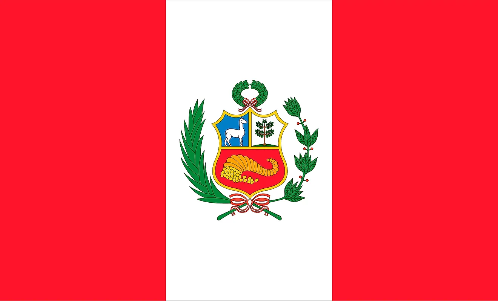

About my life
Hello! My full name is Ana Gabriela Paredes Fernandez. I am a peruvian student living with my cat, Yuumi, in New York, USA. These are some of my soft skills:
- Social
- Leadership
- Responsible
About my academics
I am currently a student at Pace University in New York, US. I am studying towards a Bachelor of Science in Computer Science. As a for knowledge I am capable of developing programs this languages:
- JavaScript
- HTML and CSS
- Python
Experience
- Extracurricular
- Through all my highschool I was on the debate team and won various awards. I also have skills on playing the electric bass.
- Projects
- I have developed this current Portfolio website myself. I also made a "Youtube clone" webpage to showcase advanced skills in web development.
- Online Courses
- I taught myself to code in 2020 by doing multiple online courses. I completed JavaScript, Front-end engineer and Python 3 courses in Codecademy and Coursera. Currently enrrolled in Harvard's CS50 course where I am learning C language.
For more information or questions about me, go to 'Contact'